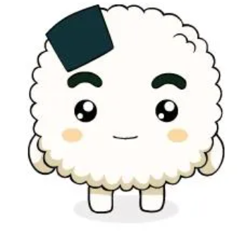
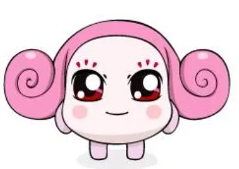

얘가 누구냐면요
레스토랑과 SNS를 종횡무진 중. 크레이지 쉐프, 광기 쉐프 등 수많은 별명을 보유한 토종 쿵야 쉐프.
요리를 하면 손님이 병원에 실려갑니다. 🚑
샐러리쿵야 왈, "음식값보다 병원비 지출이 더 크다."
맑고 초롱한 눈빛 속 은은한 광기로 MZ세대에게 큰 인기를 얻고 있음
이 눈빛... 뭔 생각을 하는지 도저히 모르겠다
기본 프로필
| 이름 | 양파쿵야 (일판: ねぎお) |
| 성격 | 한 마디로 쾌활한 바보형 주인공. 타고난 낙천주의자로 어떤 상황에서도 밝고 긍정적이다. 원래는 요리를 제외하고 뭐든 잘했지만, 저주를 받아 요리마저 못하게 됐다. 그럼에도 자신이 프로급이라 믿어 의심치 않는다. |
| 직함 | 쿵야 레스토랑 홍보대사 겸 주방장 겸 매니저 겸…등등 |
| 출생 | 1998년생 (올해 만 27세) |
| 신장 | 약 90cm |
| 성우 | 정미숙 |
| 요리 실력 | 존재 자체가 재난 🚨 (자칭 프로) |
| 최고의 요리 | 김장김치 |
| 좋아하는 것 | 무지개떡 🌈, 주먹밥쿵야 부려먹기 |
주요경력
- 자격증 양파 재배 자격증 1급 (요리 자격증 아님. 재배임)
- 학력 명문 (myeong moon) 요리학교 합격
- 경력 나쁜 말 양파 케어 센터 수석요리사 서류 합격 (서류만 됨)
- 수상 이빨로 무 다듬기 대회 최대 신기록 달성
- 현직 쿵야 레스토랑 홍보대사 겸 주방장 겸 매니저 겸…등등
양파쿵야 공식 명언 모음


공식 인스타그램 @ky_restaurantz 콘텐츠
애니메이션 줄거리
서구적인 식습관이 퍼져나가는 것을 걱정한 야채왕국 국왕이 채식주의를 알리기 위해 쿵야들을 현실 세계로 파견한다.
쿵야들의 임무는 쿵야 레스토랑을 운영하며 사람들에게 야채 요리를 먹이는 것. 하지만 현실은 사고뭉치 주방장, 잔소리 매니저, 배달 사고 전문 배달부 등 문제 덩어리들이 모인 레스토랑은 매일 바람 잘 날이 없다.
KBS 2TV에서 2006년 11월 첫 방영. 총 26화 완결.
친구들

주먹밥쿵야 주방 조수
양파쿵야를 사부로 모시고 일하는 착하고 성실한 막내. 동글동글한 몸에서 밥풀을 흘리고 다닌다.

샐러리쿵야 매니저
우아하게 살고 싶지만 되는 게 없는 레스토랑의 매니저. 잔소리 담당으로 양파쿵야와 항상 충돌한다.
반계쿵야 여동생
뜨거운 게 싫어서 반만 익은 반숙 계란. 새침한 성격이지만 귀엽고 사랑스러운 캐릭터.
공식 인스타그램
팔로워 16만명의 쿵야 레스토랑즈 공식 계정!
현생을 광기로 버티는 쿵야들의 직장인툰 · 밈 · 짤 모음
맥도날드, 현대차, 갤럭시 Z플립 콜라보도 여기서 다 나왔음